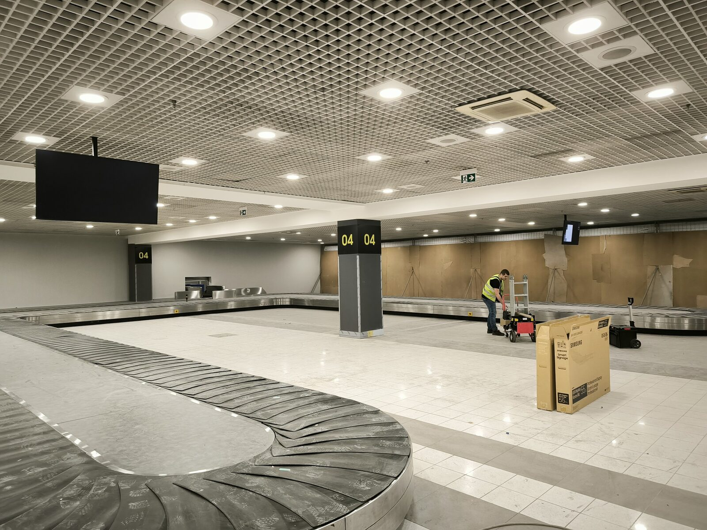
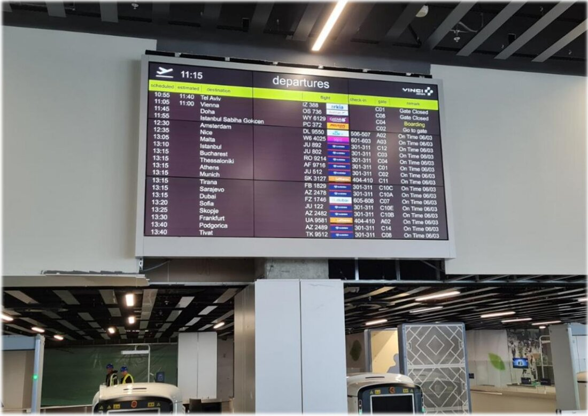
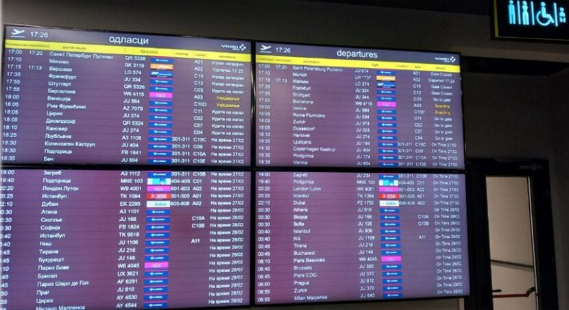
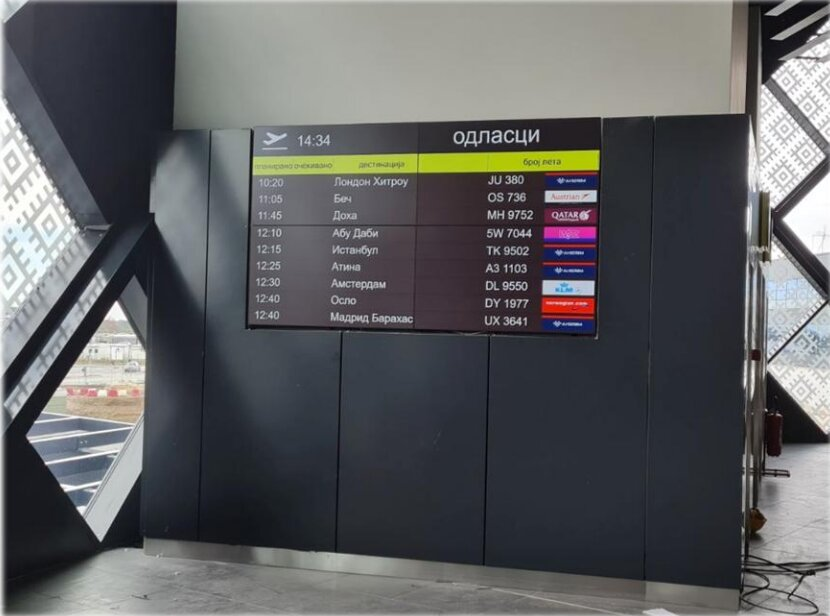
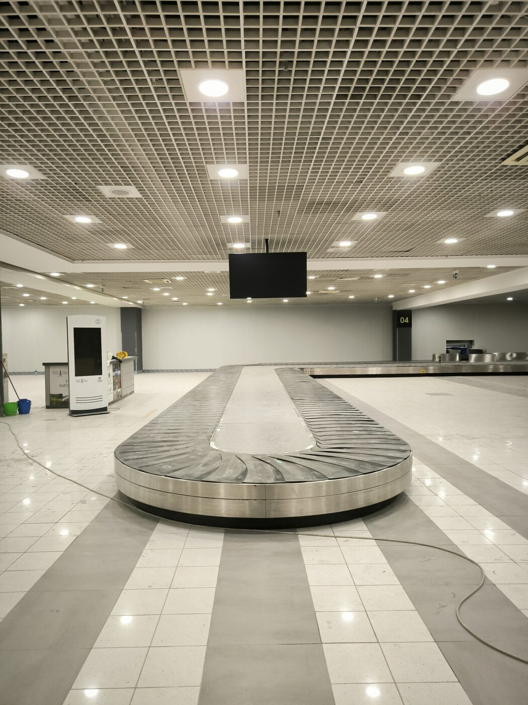
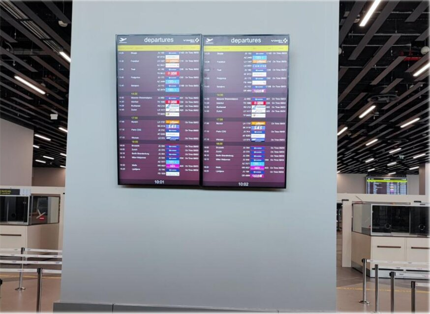
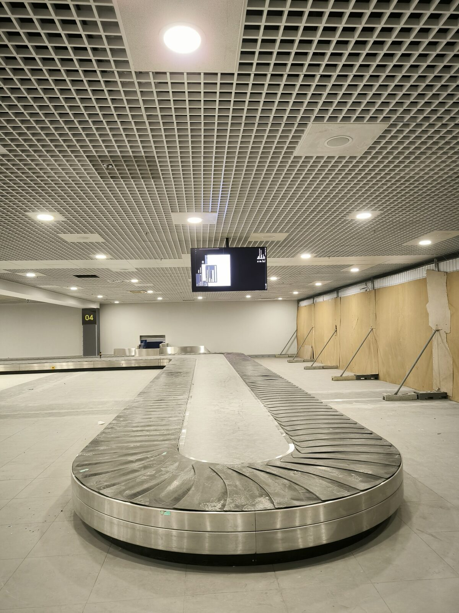

11 video wall systems
Video walls in the airport's control and operations areas, in four configurations: seven 2x1, two 2x2, one 4x2 and one 3x3.

As main contractor, TRS delivered 11 video wall systems at Belgrade Nikola Tesla Airport, together with the ongoing expansion of the Samsung digital signage platform that runs the airport's flight information display system (FIDS).

A modern airport relies on two different types of visual systems: video walls in control and operations areas, and a network of passenger information screens in the terminal. Each comes with its own requirements for format, reliability and management.
TRS was engaged as main contractor, with full responsibility for the design, delivery and installation of all systems in one coordinated delivery process. The partnership has been running since 2019 and continues with the ongoing expansion of the screen network.
The solution covers the airport's control and operations areas, as well as the passenger zones of the terminal where flight information is displayed.
Video walls in the airport's control and operations areas, in four configurations: seven 2x1, two 2x2, one 4x2 and one 3x3.
More than 150 screens of 55 and 50 inches displaying flight information, on the Samsung digital signage platform.
Full responsibility for the design, delivery and installation of all 11 systems, delivered as a single coordinated process.
The engagement has been running since 2019 and continues as the screen network expands to meet the airport's needs.
The timelapse shows the screens being mounted and prepared in the airport terminal.
The different video wall configurations are adapted to the space and operational purpose of each position.



The network of flight information screens is spread across the terminal's passenger zones.



From video walls in the control areas to passenger information screens, the airport has a single point of responsibility for systems of very different purposes and scales.
In continuous operation since 2019, the FIDS network has expanded to more than 150 screens, confirming that the architecture was designed for growth.
Four different video wall configurations across 11 systems reflect a tailored approach: each control point gets the format that fits its operational need.